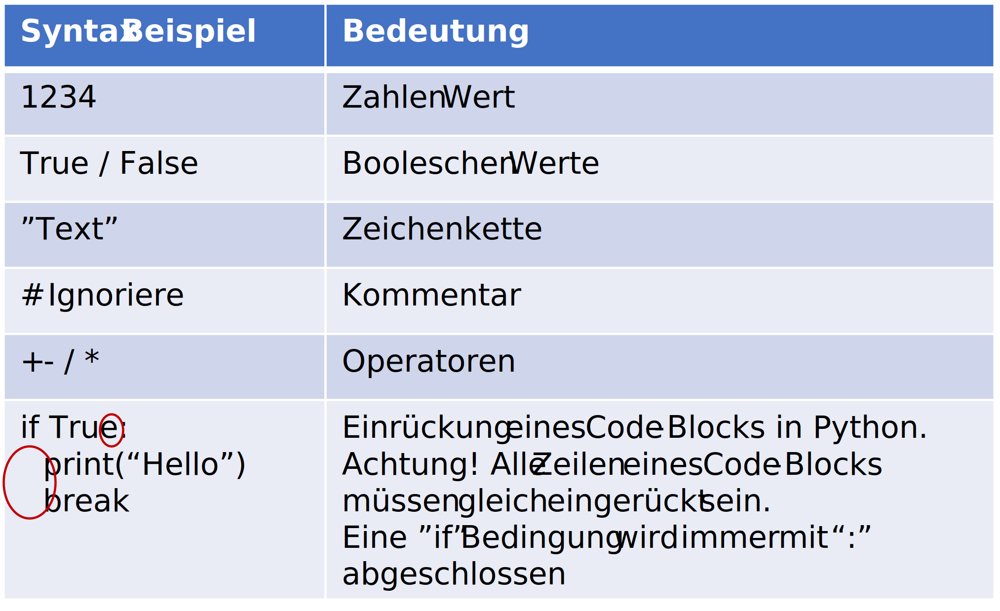
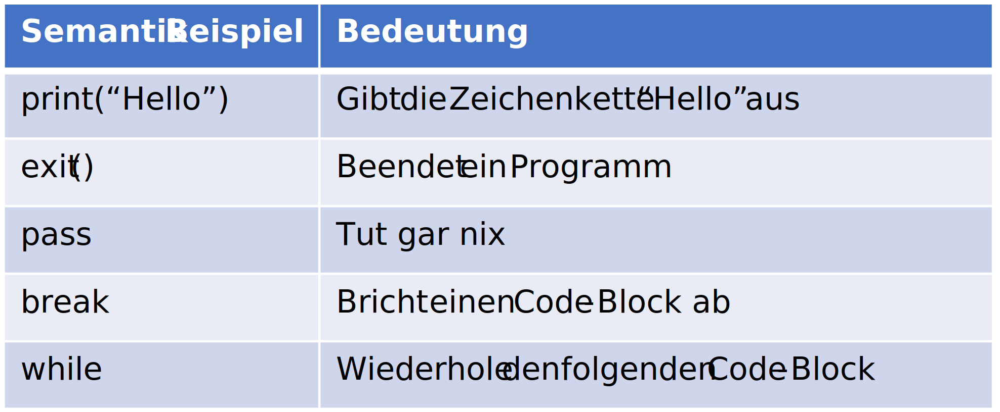

Knowledge Pyramid#
The purpose of computing is insight, not numbers.
— Richard Hamming
Slides/PDF#
Knowledge Pyramid#
The knowledge pyramid is a model for illustrating the extraction of knowledge by computers. It is well suited for explaining some fundamental concepts of computer science, such as characters, syntax, data, semantics, information, data processing, and knowledge. These concepts are arranged pyramid-style into four levels and transformation processes.

Characters#
Characters form the basis of the pyramid. They are the smallest units of information and serve as the foundation for representing data and information. Characters can be letters, digits, special characters, or control characters.
A character encodes a single letter, a digit, a special character, or a control character.
Example 1: German alphabet: with umlauts and digits, sentence separators and sentence-ending marks.
Character set:
abcdefgijklmnopqrstuvwxyzABCDEFGHIJKLMNOPQRSTUVWXYZäöüßÄÖÜ0123456789,:;-.!?
Example 2: ASCII text (ISO 8859-1) is an encoding of 256 representable characters in 8 bits. (Originally there were only 128 characters in 7 bits.)
Syntax#
Syntax is needed to convert characters into data.
Formal rules that define how well-formed expressions are formed based on a character set.
Beispiel 1: Deutsche Grammatik: Ein Satz besteht aus mehreren Wörtern mit mehreren alpha-numerischen Zeichen aus
a-zA-Z0-9. Zwei Worte sind durch ein Leerzeichen getrennt. Ein Wort kann mit einem Satztrennungszeichen aus,:;-beendet werden, außer am Ende des Satzes. Jeder Satz endet mit einem Satzendzeichen aus.!?
Example 1: German Grammar: A sentence consists of several words formed from alphanumeric characters from
a-zA-Z0-9. Two words are separated by a space. A word can be terminated by a sentence-ending punctuation mark from,:;-, except at the end of the sentence. Each sentence ends with a sentence-ending punctuation mark from.!?
Beispiel 2: HTML (Internetseite) - Die Syntax-Definition einer HTML Datei ist grob: Jede Zeile enthält eine beliebige Folge von ASCII Zeichen. Jede Zeile endet mit einem Zeilenvorschub 10 (Linux) oder Wagenrücklauf 13 und Zeilenvorschub 10 (Windows). Eine Zeile kann einen HTML-Tag enthalten, der immer mit dem Zeichen
<beginnt, darauf folgt der Elementname und ggf. Attribute und endet mit>.
Example 2: HTML (Web page) - The syntax definition of an HTML file is roughly: Each line contains an arbitrary sequence of ASCII characters. Each line ends with a line feed 10 (Linux) or carriage return 13 and line feed 10 (Windows). A line can contain an HTML tag, which always begins with the character
<, followed by the element name and possibly attributes, and ends with>.
Data#
Data are extracted from characters; they are a precursor to information.
A representation of information in a formalized form that can be interpreted repeatedly, suitable for communication, interpretation, or processing.
Example 1: A sentence that is syntactically correct according to our rules would be, for example, “I only understand the train station.” This, however, does not make sense.
Example 2: HTML tree (DOM) - A syntax tree that represents the nesting of HTML tags. For example, the following tags are mapped into a table, with rows (
<TR>) and two cells (<TD>) in a tree.
<table width="300">
<tr height="50">
<td>Name</td>
<td>Birthday</td>
</tr>
</table>
Semantics#
In communication, it is not only necessary to formulate formally correct content, but it is also important to know the meaning of the content and to be able to interpret it; that is what semantics is.
Guidelines for the interpretation of data.
Example 1: In a sentence, not only must the syntax be correct, but the meaning of the words must also be known. In the German dictionary, for example, the definition of “Bahnhof” is: the overall complex of a railway station with tracks and associated buildings; a building belonging to the station with a [large] hall, in which the counters for tickets and luggage, waiting rooms, shops or the like are located.
Example 2: Meaning of the HTML elements (https://www.w3schools.com/html/)
<table>table
<td>table row
<td>table cell
Information#
Information has a specific meaning and purpose.
Data that are given meaning and purpose. They have meaning and are organized for a specific purpose. Information, for example, is a collection of data with accompanying explanations, interpretations, and other text material that pertain to a particular object, event, or process.
Example 1: A correct German sentence, e.g., „Ich verstehen nur Bahnhof.” is syntactically correct and we know the meaning of each word. However, the sentence remains incomprehensible to foreigners because they lack the context to understand the expression.
Example 2: Interpreted HTML tree. For example, in the HTML tree shown above, the information about the table’s width is inherited by all rows, and the height of the row is inherited by all cells.
Processing#
Information must first be processed to link them and derive knowledge.
Linking information through algorithms, experiences, values, and domain knowledge.
Example 1: Germans know from experience that “Ich verstehe nur Bahnhof.” is an idiom.
Example 2: Web browsers - A web browser interprets the HTML tags and, for example, determines the best width for the cells, because it knows that there are two cells in the row.
Knowledge#
Knowledge is the highest form of data processing and requires the successful use of syntax, semantics, and processing.
The collected, interconnected information about a particular matter, integrated with personal experiences. Knowledge exhibits a substantially higher complexity than information and is one of the most valuable assets of an enterprise. Through knowledge, decisions can be made and actions can be initiated.
Example 1: „Ich verstehen nur Bahnhof.“ means not understanding anything or not wanting to understand.
Example 2: Fully rendered table
| Name | Birthdate |
Syntax of a Programming Language#
A formal set of rules that defines how the computer should interpret the programming language. The syntax typically includes rules for defining commands (keywords), variables (values), and code blocks (statements).

Semantics of a programming language#
Definition of the meaning of language elements and the permissible combinations of elements.
